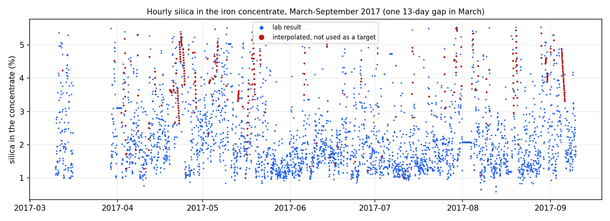
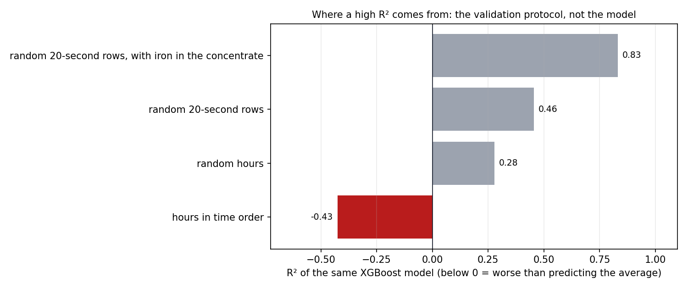
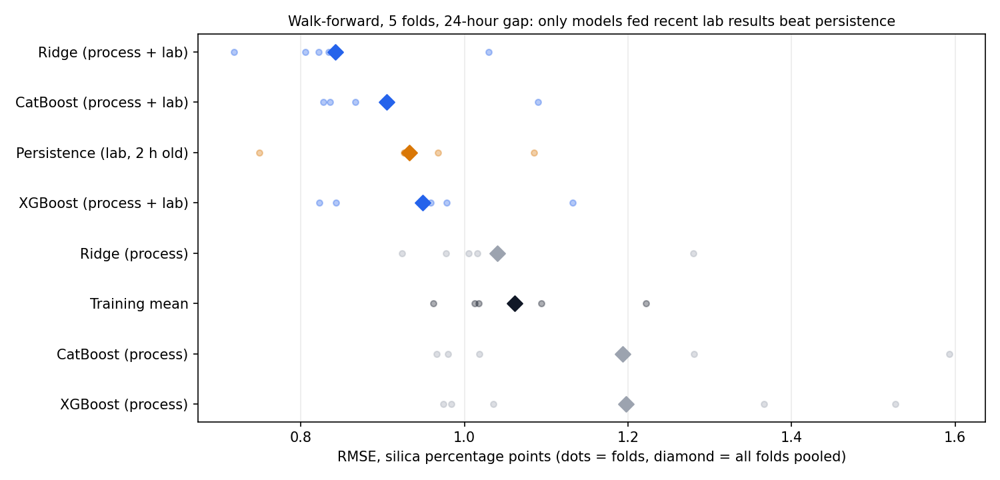
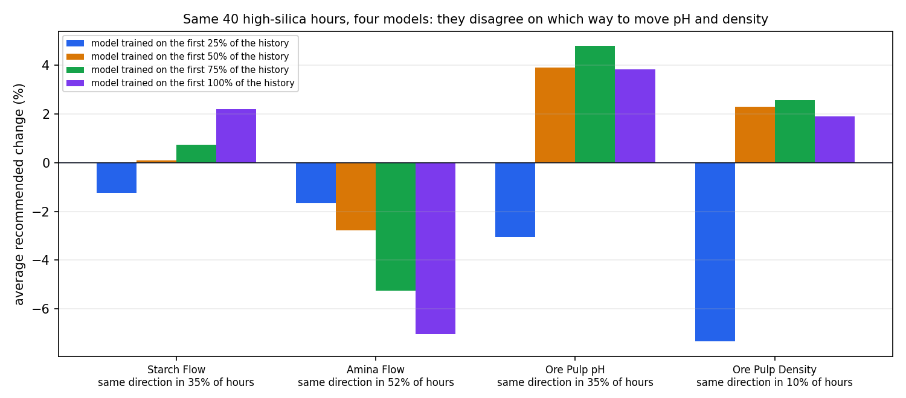
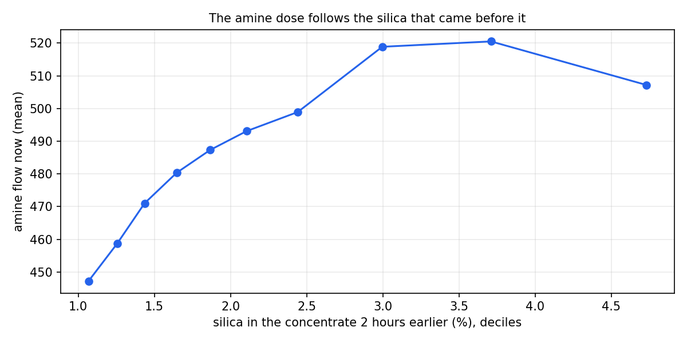

Flotation Plant Optimization: What the Data Supports
On six months of real data from an iron-ore flotation plant, the same gradient-boosting model that scores R² 0.83 on randomly shuffled 20-second rows is worse than predicting the average once it is validated in time order; only a model fed the latest lab results beats simply repeating the last one, and four models trained on different months recommend opposite pH and pulp-density moves for the same hours, so the data does not support prescribing setpoints.
This page shows the project's results. The methodology, the design decisions and the limitations are documented in the repository's README.
The data

The target, hour by hour: lab results in blue, interpolated hours (excluded) in red. Silica averages 2.3% with a standard deviation of 1.1 points and a one-hour autocorrelation of 0.77, which is what makes random splits so flattering.
1. Where a high R² comes from

The same XGBoost model under four protocols. Random 20-second rows put readings from the same hour, with the same lab value, in both training and test; adding the iron in the concentrate hands the model the answer's twin. Shuffling hours still mixes neighbours with nearly the same silica. Only time order asks the question a plant cares about, and there the model loses to the average in three of five folds.
2. What can be predicted

Every fold: the models given recent lab results (blue) cluster below persistence (orange); the process-only models scatter around the average, and the tree models reach an RMSE of 1.53 to 1.59 in the second fold.
3. What can be prescribed

Each model is confident (a predicted drop of 0.43, 0.28, 0.33 and 0.33 silica points), and the models disagree on how to get there. All four agree on the direction of the move in 35% of the hours for starch, 52% for amine, 35% for pH and 10% for pulp density. A genetic algorithm (DEAP) and differential evolution (SciPy) reach the same optimum on the same model (median difference 0.00 points, largest 0.17), so the disagreement is the models', not the optimizers'.

The most likely reason: the dose follows the silica. Mean amine flow rises with the silica measured two hours before, up to about 3.5% silica, so in the data high amine goes with high silica and every model recommends less of it. In reverse cationic flotation the amine is the collector that floats the quartz; less of it should raise the silica, not lower it. A model fitted to historical operation learns how operators reacted, not what the reagents do. Choosing setpoints needs data where the doses were moved on purpose (plant trials or step tests), not a better optimizer.